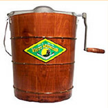

Ice Cream Maker
|  |
One of the delights of my childhood was homemade ice cream made in a hand-cranked ice cream maker. It seemed magic to me at the time, and it was only much later that the "how it works" questions occur to me. Even now, understanding the principles is definitely not a prerequisite to enjoying the product. |
Freezing the ice cream mix requires removing a large amount of energy from it to extract the heat of fusion. If just ice is placed in the outer container, it tends to just cool it to zero Celsius and not freeze it. Key to the freezing process is the adding of salt to the ice on the outside. This lowers its freezing point and causes it to start to melt. But it must gain the necessary energy for the phase change. It extracts that energy from the ice cream mixture, allowing it to freeze. If the system were static, the process would tend to just freeze a thin layer at the interior wall of the container for the ice cream mix and this would form an insulating layer, inhibiting the freezing of the remainder of the mixture. This is why you have to turn the crank to make good ice cream. The turning of the crank rotates the metal container and counter-rotates the stirring paddles inside it. This keeps the ice cream mix at a more uniform temperature so that it all freezes into ice cream.
|
Index |